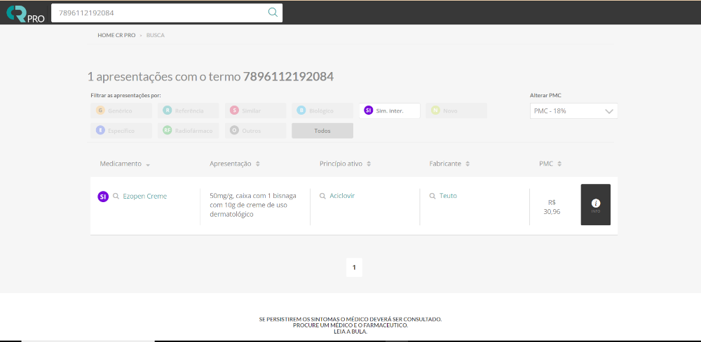
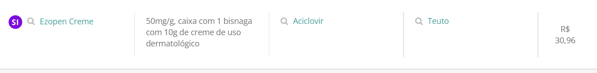
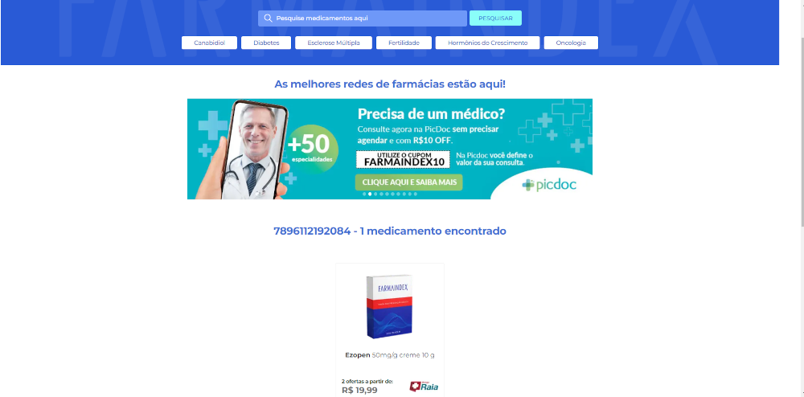
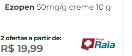

Captura de Dados de Medicamentos
Este projeto consiste na captura automatizada de dados de medicamentos utilizando web scraping de dois sites diferentes: Consulta Remédios e Farmaindex. Abaixo estão descritas as funções principais de cada um dos scripts.
Primeiro Script: Captura de Dados do Consulta Remédios
Imagem do site
Este script realiza a captura de dados de medicamentos a partir do site Consulta Remédios, utilizando as seguintes funções:
- captura_de_dados(row, col): Função responsável por realizar a solicitação ao site e extrair informações como apresentação, medicamento, princípio ativo e fabricante. Em caso de falha na solicitação, a função retorna valores vazios.
- Aplicação dos Dados: O script aplica a função
captura_de_dadosa cada linha de um arquivo Excel, armazenando os dados capturados em novas colunas e, em seguida, salvando os resultados em um novo arquivo Excel.

Segundo Script: Captura de Dados do Farmaindex
Imagem do site
Este script realiza a captura de dados de medicamentos a partir do site Farmaindex, utilizando as seguintes funções:
- captura_de_dados(row, col): Função que realiza a solicitação ao site Farmaindex e extrai as mesmas informações de medicamentos. Caso o medicamento seja encontrado, a função captura e retorna os dados; se não, retorna valores vazios.
- Aplicação dos Dados: Assim como o primeiro script, este aplica a função
captura_de_dadosa um arquivo Excel, adiciona as informações capturadas a novas colunas, e salva o resultado em um arquivo Excel separado.

Tecnologias Utilizadas
- Python: Linguagem principal utilizada para automação e manipulação de dados.
- Pandas: Biblioteca essencial para manipulação de dados em estruturas DataFrame.
- Requests: Biblioteca usada para realizar solicitações HTTP.
- BeautifulSoup: Biblioteca usada para fazer o parsing de HTML e extrair dados.
- Openpyxl: Biblioteca usada para leitura e escrita de arquivos Excel.